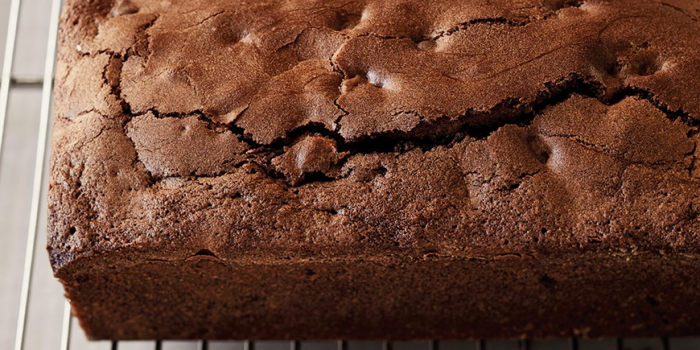

Chocolate Loaf

Description
Makes 2 loaves, from Ina Garten's Cook Like a Pro.
This triple-chocolate cake is perfect for make-ahead holiday entertaining.
Ingredients
- 16 tablespoons (2 sticks) unsalted butter, at room temperature
- 2 cups plus 2 tablespoons all-purpose flour, divided
- 1 cup boiling water
- 5 ounces bittersweet chocolate, such as Lindt, roughly chopped
- 2 tablespoons unsweetened cocoa powder, such as Pernigotti
- 1 teaspoon instant coffee granules, such as Nescafé
- 1 teaspoon baking powder
- 1½ teaspoons kosher salt
- 1 cup roughly chopped walnuts
- 1 cup semisweet chocolate chips
- 1 cup granulated sugar
- 1 cup dark brown sugar, lightly packed
- 3 extra-large eggs, at room temperature
- 2 teaspoons pure vanilla extract
Steps
- Preheat the oven to 350 degrees. Grease two (8½ by 4½ by 2½-inch) loaf pans, line the bottoms with parchment paper, then grease and flour the pans.
- Pour the boiling water into a 2-cup glass measuring cup, add the bitter-sweet chocolate, cocoa powder, and coffee granules, and stir until the chocolate melts. Set aside to cool for at least 15 minutes.
- In a medium bowl, sift together the 2 cups flour, the baking powder, and salt and set aside. In another bowl, combine the walnuts, chocolate chips, and the 2 tablespoons flour and set aside.
- In the bowl of an electric mixer fitted with the paddle attachment, beat the butter, granulated sugar, and brown sugar together on medium speed for 2 minutes. With the mixer on low, add the eggs, one at a time, and then the vanilla, scraping down the bowl with a rubber spatula. Alternately in thirds, add the flour mixture and the chocolate mixture, beginning and ending with the flour. Fold in the nut mixture with a rubber spatula.
- Divide the batter equally between the prepared pans, smooth the tops, and bake for 45 to 55 minutes, until a toothpick inserted in the middle comes out clean. (Test in a few places because you might hit a warm chocolate chip.) Cool in the pans for 30 minutes, turn out on a cooling rack, rounded side up, and allow to cool to room temperature.